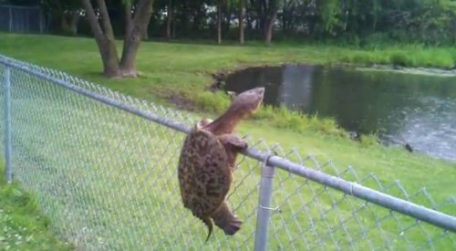

say yes quickly, if you know, if you've known it from before the beginning of the Universe."
--Rumi
"There is a community of the spirit.
Join it, and feel the delight
of walking in the noisy street
and being the noise.
Drink all your passion,
and be a disgrace."
-- Rumi
As mentioned in a previous Mind-Tickler a few weeks ago, I’m taking an online painting class.
It’s a very large group -- 1400 members on Facebook.
Thankfully it’s also a very kind and supportive group. Which is a darn good thing.
Because posting our work is required, and post after post after post after post (ok I won’t do that 1400 times) is, “OMG it’s awful,” and “I’m so embarrassed,” and “I almost didn’t post this,” and “No one 'Likes' my work so it must be because I’m not good.”
Yep, 1400, I’m afraid I’m not good enough individuals.
Perhaps this class somehow gathered up only 1400 particularly insecure people.
But it’s unlikely all the secure ones took some other class. So no.
The funny things is, a significant portion of participants are successful professionals supporting themselves with their painting. They are very used to posting their art online, and the work shown is pretty much always quite beautiful.
But it doesn’t matter. Because when it comes to themselves, no one thinks so.
So the word that keeps coming up in class is, “vulnerability.”
Hmmm. What is vulnerable, and to what, specifically? There’s no literal danger, no literal exposure. What real thing is exposed? What real thing is seen? What is threatened by some comments on social media?
Perhaps insecure is just what humans are.
The self is not secured, apparently.
And my gosh, it's so very confused.
Because it's pretending that paint- or anything humans might produce- is “an extension” of whatever it is we are. It's pretending there’s actual exposure of the self in random splatters, or in any other production.
As if what comes out of a paintbrush or keyboard or golf club or tennis racket or anything else- means something about us.
As a person.
So in this painting class, I am repeatedly struck by how fragile the ego is.
How delicate! How frightened of others' thoughts. How desperate to control an image and story, by only posting nice and approved-of things. Making itself tiny and unnoticed.
And then, so quickly, so immediately! It is calmed and soothed and relieved simply by a few compliments and encouraging words.
All it takes to ease "vulnerability" is a few "I love it!" comments.
Weird.
Still, fear keeps making itself known, by folks not showing up to class, or procrastinating (for a class they were eager to take,) or lurking without posting.
It starts to be clear, watching these talented artists, that being a person is terrifying.
Perhaps this is why humans are so often anxious.
Perhaps this is also why we’re always seeking – in so many different ways- to connect, meld, and to be included with the Larger-Than-Us.
We're calmed by loving inclusion.
Fear in everyone- painters and non-painters alike- seems (in part) to be terror of not being part of that greater whole.
We're terrified that we might be the one person left out of the vastness, the one loser standing outside. The fear is that we might be the one terrible, outside-the-big-tent, outside-the-garden, exclusion.
Is it just me? Am I the single exception? Am I the one terrible one? is awful in its aloneness.
We want inclusion so as not to feel the individuality and personhood we’ve spent lifetimes faking.
Even though we know we’re not that. Even though we feel what we are.
Which, whatever it may be, is no individual.
Luckily though, no amount of perceived or anticipated failure- no bad painting, no missed tennis shot, no crappy writing-
changes what we are.
Whether it’s seen or not, exposed or not, felt or not,
we’re already included in the garden.
Because really, where else can we be?
We ARE the garden.
Which means that exposure we so fear
is nothing real.
Just like us.
"Split me,
tear me apart,
fling me across the fabric of space and time.
Make me nothing and from nothing, make me everything."
--Rumi
